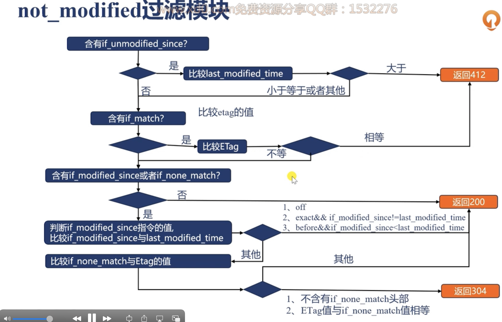
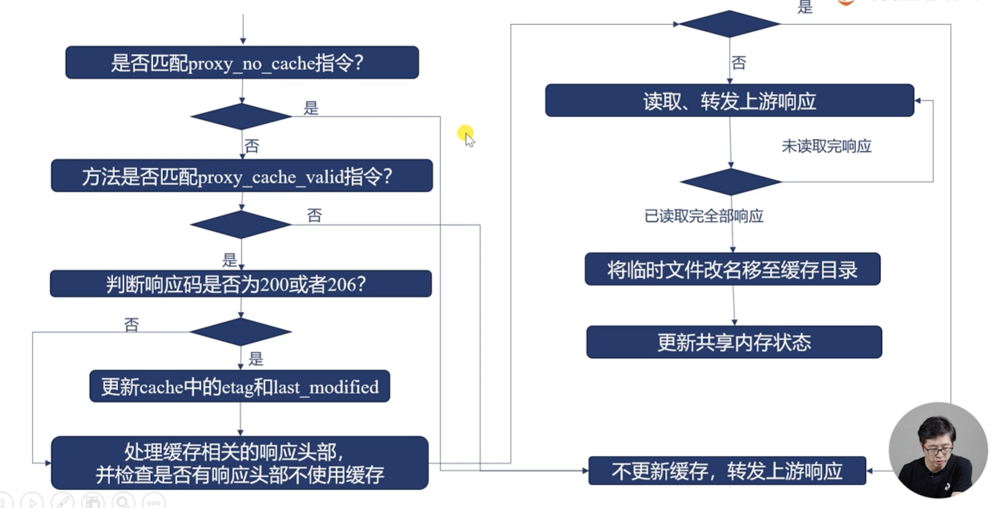
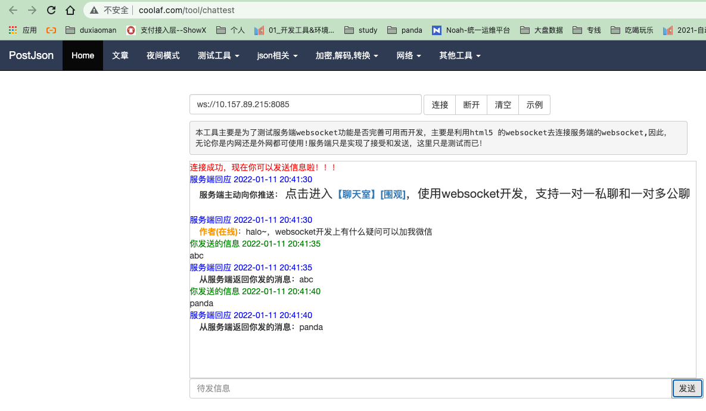
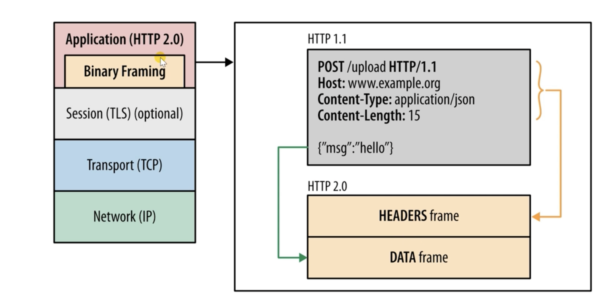

4. 负载均衡
4.1. nginx扩展方式
基于url对功能进行分发
基于rr算法进行水平扩展
基于ip地址映射到特定ip或者集群
4.2. 支持的反向代理协议
udp
tcp
memcached
scgi
uwsgi
grpc
http
websocket
4.3. 负载均衡基础指令
指定上游服务地址， 通过upstream指令指定， 内部通过server指令指定server。 server指定的地址， 可以是域名、ip、或者socket地址。不加端口默认是80端口。
官方文档: https://nginx.org/en/docs/http/ngx_http_upstream_module.html#upstream
server片段重要参数说明
weight: 权重，默认是1
max_conns: 最大活动连接数量，默认是0，也就是不限制。
max_fails: 最大失败次数，也就是在fail_timeout这个时间内，如果出现max_fails次数的话，对应的server就不会再次被选择。
fail_timeout: 默认是10s
backup: 备用， 如果所有的主都不可用才使用这个的。
down: 表示这个机器永远不要调度。
resolve: 解析域名到地址的。必须使用共享内存的。1.5.12之后才支持动态感知域名变化的。
4.4. 对上游服务使用长连接
降低ningx与上游服务器的建立关闭连接的消耗，提升吞吐量的同事降低延迟。
http1.1才支持， 需要加入如下设置。
proxy_http_version 1.1;
proxy_set_header Connection "";
主要参数说明
keepalive : 指定次数。
keepalive_requests: 一个连接最多使用的req
keepalive_timeout: 一个连接最多使用的时间
4.5. 轮训配置样例
这里我先使用一个nginx启动了server， 测试如下
[root@zhaojiedi-elk-2 nginx]# curl 127.0.0.1:8001
8001 s1
[root@zhaojiedi-elk-2 nginx]# curl 127.0.0.1:8002
8002 s2
配置样例
upstream rrups {
server 127.0.0.1:8001 weight=2 max_conns=2 max_fails=2 fail_timeout=5;
server 127.0.0.1:8002;
keepalive 20;
}
server {
listen 8084;
server_name n-rrups.linuxpanda.tech;
error_log myerror.log info;
location /{
proxy_pass http://rrups;
proxy_http_version 1.1;
proxy_set_header Connection "";
}
}
测试结果
[root@zhaojiedi-elk-2 conf]# curl http://n-rrups.linuxpanda.tech
8001 s1
[root@zhaojiedi-elk-2 conf]# curl http://n-rrups.linuxpanda.tech
8002 s2
[root@zhaojiedi-elk-2 conf]# curl http://n-rrups.linuxpanda.tech
8001 s1
[root@zhaojiedi-elk-2 conf]# curl http://n-rrups.linuxpanda.tech
8001 s1
[root@zhaojiedi-elk-2 conf]# curl http://n-rrups.linuxpanda.tech
8002 s2
启用了keepalive 我们看下tcpdump 抓包的结果
[root@zhaojiedi-elk-2 ~]# tcpdump -i lo port 8001 -n
tcpdump: verbose output suppressed, use -v or -vv for full protocol decode
listening on lo, link-type EN10MB (Ethernet), capture size 262144 bytes
16:20:09.756199 IP 127.0.0.1.42492 > 127.0.0.1.vcom-tunnel: Flags [S], seq 1693123386, win 43690, options [mss 65495,sackOK,TS val 299254666 ecr 0,nop,wscale 7], length 0
le 7], length 0
16:20:09.756220 IP 127.0.0.1.42492 > 127.0.0.1.vcom-tunnel: Flags [.], ack 1, win 342, options [nop,nop,TS val 299254666 ecr 299254666], length 0
16:20:09.756262 IP 127.0.0.1.42492 > 127.0.0.1.vcom-tunnel: Flags [P.], seq 1:70, ack 1, win 342, options [nop,nop,TS val 299254666 ecr 299254666], length 69
16:20:09.756266 IP 127.0.0.1.vcom-tunnel > 127.0.0.1.42492: Flags [.], ack 70, win 342, options [nop,nop,TS val 299254666 ecr 299254666], length 0
16:20:09.756357 IP 127.0.0.1.vcom-tunnel > 127.0.0.1.42492: Flags [P.], seq 1:171, ack 70, win 342, options [nop,nop,TS val 299254666 ecr 299254666], length 170
16:20:09.756361 IP 127.0.0.1.42492 > 127.0.0.1.vcom-tunnel: Flags [.], ack 171, win 350, options [nop,nop,TS val 299254666 ecr 299254666], length 0
-----下面是第二次的。
16:20:35.599901 IP 127.0.0.1.42492 > 127.0.0.1.vcom-tunnel: Flags [P.], seq 70:139, ack 171, win 350, options [nop,nop,TS val 299280510 ecr 299254666], length 69
16:20:35.600018 IP 127.0.0.1.vcom-tunnel > 127.0.0.1.42492: Flags [P.], seq 171:341, ack 139, win 342, options [nop,nop,TS val 299280510 ecr 299280510], length 170
16:20:35.600028 IP 127.0.0.1.42492 > 127.0.0.1.vcom-tunnel: Flags [.], ack 341, win 359, options [nop,nop,TS val 299280510 ecr 299280510], length 0
可以看到第一次是三次握手了， 但是是没有F的falgs的，也就是关闭连接的， 接下里curl的直接传输了。
4.6. 反向代理的hash算法
对于ipv4地址使用前面3个字节作为关键字，对ipv6使用完整的地址。通过ip_hash 进行配置。
当然也可以通过hash key 方式配置非ip方式的。
官方文档： https://nginx.org/en/docs/http/ngx_http_upstream_module.html#ip_hash
配置ip_hash
upstream rrups {
#ip_hash;
hash user_$arg_username;
server 127.0.0.1:8001 weight=2 max_conns=200 max_fails=2 fail_timeout=5;
server 127.0.0.1:8002;
}
server {
listen 8084;
server_name n-hash.linuxpanda.tech;
error_log myerror.log info;
location /{
set_real_ip_from 10.157.0.0/16;
set_real_ip_from 10.21.0.0/16;
real_ip_recursive on;
real_ip_header X-Forwarded-For;
proxy_pass http://rrups;
proxy_http_version 1.1;
proxy_set_header Connection "";
}
}
验证1 ip_hash
[root@zhaojiedi-elk-2 nginx]# curl http://n-hash.linuxpanda.tech:8084 -H "X-Forwarded-For: 1.1.1.1"
8001 s1
[root@zhaojiedi-elk-2 nginx]# curl http://n-hash.linuxpanda.tech:8084 -H "X-Forwarded-For: 1.1.1.1"
8001 s1
[root@zhaojiedi-elk-2 nginx]# curl http://n-hash.linuxpanda.tech:8084 -H "X-Forwarded-For: 1.1.1.1"
8001 s1
[root@zhaojiedi-elk-2 nginx]# curl http://n-hash.linuxpanda.tech:8084 -H "X-Forwarded-For: 1.1.1.1"
8001 s1
[root@zhaojiedi-elk-2 nginx]# curl http://n-hash.linuxpanda.tech:8084 -H "X-Forwarded-For: 1.1.1.1"
8001 s1
验证1 hash key
[zhaojiedi_dxm@instance-pu4usb9a ~]$ curl http://n-hash.linuxpanda.tech:8084?username=abc
8001 s1
[zhaojiedi_dxm@instance-pu4usb9a ~]$ curl http://n-hash.linuxpanda.tech:8084?username=abc
8001 s1
[zhaojiedi_dxm@instance-pu4usb9a ~]$ curl http://n-hash.linuxpanda.tech:8084?username=abc
8001 s1
[zhaojiedi_dxm@instance-pu4usb9a ~]$ curl http://n-hash.linuxpanda.tech:8084?username=deaaa
8002 s2
[zhaojiedi_dxm@instance-pu4usb9a ~]$ curl http://n-hash.linuxpanda.tech:8084?username=deaaa
8002 s2
[zhaojiedi_dxm@instance-pu4usb9a ~]$ curl http://n-hash.linuxpanda.tech:8084?username=deaaa
8002 s2
4.7. 一致性hash算法
通过hash key consistent 即可。
4.8. 连接做少的上游服务器
4.9. upsteam共享内存
使用共享内存可以将upstream定义的策略数据，状态数据放到共享内存中，对所有worker进程生效。
4.10. upsteam模块提供的变量
upstream_addr: 地址
upstream_connect_time: 建立了解消耗时间
upstream_header_time: 接收上游的头部需要的时间
upstream_response_time: 完整耗时
upstream_bytes_received: 响应长度
upstream_response_length: 包体长度
upstream_status: 上游的状态吗， 如果没有连接上，502
upstream_cookie_名称: 上游返回的set_cookie取出的值。
4.11. http反向代理的处理流程

4.12. proxy模块的基本使用
这个模块是支持http和https协议2种类型的代理的， proxy 后面的url必须以http或者https开头， 接下来是域名、ip 、socket或者upstream名字。前面2个是可以添加端口的。
如果url参数带不带uri差异是比较大的。 - 不携带uri: 直接转发给上游 - 携带uri: 将location匹配的部分进行替换。
提前准备一个后端
server {
listen 8001 ;
location / {
return 200 '8001 s1\r\n uri=$uri \r\n';
}
}
upstream r1 {
server 127.0.0.1:8001;
}
server {
listen 8084;
server_name n-proxy.linuxpanda.tech;
error_log myerror.log info;
location /a/b/c {
#proxy_pass http://r1;
proxy_pass http://r1/panda;
proxy_http_version 1.1;
proxy_set_header Connection "";
}
}
验证一下
# 不带uri方式的。
[root@zhaojiedi-elk-2 conf]# curl http://n-proxy.linuxpanda.tech:8084/a/b/c/d/e/f
8001 s1
uri=/a/b/c/d/e/f
[root@zhaojiedi-elk-2 conf]# curl http://n-proxy.linuxpanda.tech:8084/a/b/c/def
8001 s1
uri=/a/b/c/def
# 带uri方式的。
[root@zhaojiedi-elk-2 conf]# curl http://n-proxy.linuxpanda.tech:8084/a/b/c/def
8001 s1
uri=/panda/def
[root@zhaojiedi-elk-2 conf]# curl http://n-proxy.linuxpanda.tech:8084/a/b/c/d/e/f
8001 s1
uri=/panda/d/e/f
4.13. 修改向后端的请求行
proxy_method: 修改请求方法
proxy_http_version: 修改协议版本。
proxy_set_header field value: 修改请求头部。
proxy_pass_request_header： 用户的header是否发送。
proxy_pass_request_body: body是否发送
proxy_set_body: 自定义body方式。
4.14. 接收客户端请求的包体
proxy_request_buffering 控制收完在转发还是边收边转发。
client_max_body_size: 仅仅对头部含有Content-Length有效超过最大长度后，返回413错误。
client_body_temp_path: 临时文件存放目录，这个是存储body信息的。
client_body_in_file_only : 请求的包体是否保留的文件中，on必须写的， clean: 处理完毕后删除， off: 非常小，buffer_size 如果够的话，就不写了。
client_body_timeout : 两次读取body的最大时延，返回418错误。
4.15. 向上游建立连接
proxy_connect_timeout 建立连接，如果超时，502
proxy_next_upstream : 特定错误后，可以换一个机器进行调度响应。
proxy_socket_keepalive: 保持连接。
keepalive: 控制数量
keepalive_requests: 控制连接复用次数
proxy_bind: 修改源地址。如果非本机地址，需要transparent的参数辅助的。
proxy_ignore_client_abort: 客户端和nginx如果取消了， nginx和后端的连接是否断开。
proxy_send_timeout : 发送请求的超时时间。
4.16. 接收上游的响应头部
proxy_buffer_size 是用来存放对应响应头部的，如果比较大，errlog会出现upstream send too big header。
proxy_buffering ： 接收完整的响应包体，这个基本同proxy_request_buffering.
4.17. 接收上游的包体
proxy_buffers 这个用于存放上游的http包体大小，8 8k参数是如果8k足够就只分配1个8k的， 不够继续分配，最多8个8k。
proxy_buffering:
proxy_max_temp_file_size: 写入磁盘的文件的最大值。
proxy_temp_file_write_size: 每次写入字节限制。
proxy_temp_path: 指定临时文件目录和存储级别。
proxy_busy_buffers_size: 及时转发包体
4.18. 接受上游网络速度相关指令
proxy_read_timeout: 2次读取超时时间。
proxy_limit_rate: 读取上游的速率。
4.19. 包体持久化
proxy_store_access: 定义临时文件持久化， 权限设置。
proxy_store: 可以使用变量控制存放位置。
4.20. 加工响应头部
proxy_ignore_header: 禁用特定字段。
proxy_hide_header: 不转发某些头部。
porxy_pass_header： 允许哪些头部发送。
proxy_cookie_domain: 修改域名
proxy_cookie_path: 修改path
proxy_redirect: 重定向url
4.21. 上游返回错误的处理办法
proxy_next_upstream: 在没有想客户端发送任何内容的时候，就错误的才重新选择新的机器。
proxy_next_upstream_timeout: 重试的时间
proxy_next_upstream_tries: 重试的次数。
proxy_intercept_erros: 是否拦截上游失败响应，如果上游响应>=300的视乎，启用这个选项的话， error_page就会生效了。
准备工作
[root@zhaojiedi-elk-2 nginx]# cat /root/nginx/conf/sites/s1.conf
server {
listen 8001 ;
location / {
return 200 '8001 s1\r\n uri=$uri \r\n';
}
}
[root@zhaojiedi-elk-2 nginx]# cat /root/nginx/conf/sites/s2.conf
server {
listen 8002;
location / {
return 200 '8002 s2 \r\n';
}
}
[root@zhaojiedi-elk-2 nginx]# cat /root/nginx/conf/sites/s3.conf
server {
listen 8003;
location / {
return 502 ;
}
}
openrestry配置如下
upstream ups {
server 127.0.0.1:8001;
server 127.0.0.1:8002;
server 127.0.0.1:8003;
}
log_format ups 'porxy_host="$proxy_host" proxy_port="$proxy_port" upstream_addr="$upstream_addr" upstream_status="$upstream_status"';
server {
listen 8084;
server_name n-proxyc.linuxpanda.tech;
error_log myerror.log info;
root html;
error_page 502 500 /a.txt;
access_log logs/access.log ups ;
location / {
proxy_pass http://ups;
proxy_next_upstream error timeout http_502;
}
}
验证效果
[root@zhaojiedi-elk-2 nginx]# curl http://n-proxyc.linuxpanda.tech:8084/
8001 s1
uri=/
[root@zhaojiedi-elk-2 nginx]# curl http://n-proxyc.linuxpanda.tech:8084/
8002 s2
# 803是返回502的， 但是我们配置了next的，会调度到别的实例然后拿到结果。
[root@zhaojiedi-elk-2 nginx]# curl http://n-proxyc.linuxpanda.tech:8084/
8001 s1
uri=/
[root@zhaojiedi-elk-2 nginx]# tail -n 10 logs/access.log
porxy_host="ups" proxy_port="80" upstream_addr="127.0.0.1:8001" upstream_status="200"
porxy_host="ups" proxy_port="80" upstream_addr="127.0.0.1:8002" upstream_status="200"
porxy_host="ups" proxy_port="80" upstream_addr="127.0.0.1:8003, 127.0.0.1:8001" upstream_status="502, 200"
4.22. ssl使用场景和双向认证
官方文档： https://nginx.org/en/docs/http/ngx_http_ssl_module.html#directives
几个主要连接相关变量
ssl_client_serial: 连接上的客户端序列号。
ssl_early_data: 在tls3使用early data 且握手为完成返回1 ，否则返回空。
ssl_client_verify: 验证失败返回failed:原因，成功返回Success.
ssl_session_reused: 如果session复用，返回r,否则为. 。
准备相关证书
# 这里不多弄具体证书创建问题， 需要几个文件，
ca的pem文件
n-ssl1.linuxpanda.tech.key n-ssl1.linuxpanda.tech.crt
n-ssl2.linuxpanda.tech.key n-ssl2.linuxpanda.tech.crt
# 具体操作可以参考： https://www.linuxpanda.tech/en/latest/%E6%9D%82%E9%A1%B9/CA%E7%9A%84%E6%90%AD%E5%BB%BA.html
# 或者： https://www.cnblogs.com/zhaojiedi1992/p/zhaojiedi_linux_011_ca.html
nginx配置
server {
listen 8011 ssl;
server_name n-ssl1.linuxpanda.tech;
ssl_certificate ssl/n-ssl1.linuxpanda.tech.crt;
ssl_certificate_key ssl/n-ssl1.linuxpanda.tech.key;
ssl_verify_client on;
ssl_client_certificate ssl/cacert.pem;
location / {
return 200 'ssl_early_data=$ssl_early_data ; ssl_client_verify=$ssl_client_verify; \r\n';
}
}
openrestry配置
server {
listen 8011 ssl;
server_name n-ssl1.linuxpanda.tech;
ssl_certificate ssl/n-ssl1.linuxpanda.tech.crt;
ssl_certificate_key ssl/n-ssl1.linuxpanda.tech.key;
ssl_verify_client on;
ssl_client_certificate ssl/cacert.pem;
location / {
return 200 'ssl_early_data=$ssl_early_data ; ssl_client_verify=$ssl_client_verify; \r\n';
}
}
验证测试
[root@zhaojiedi-elk-2 sites]# curl http://n-ssl2.linuxpanda.tech:8012/
ssl_early_data= ; ssl_client_verify=SUCCESS;
4.23. 浏览器缓存与nginx缓存
- 浏览器缓存
优点： 没有网络消耗，速度最快，即使有网络消耗也比较小。 缺点： 仅仅提升一个用户体验。
- nginx缓存：
优点： 提升所有用户体验，有效降低后端负载，通过304减少与上游的流量消耗。 缺点： 用户仍然保持网络消耗
建议同时使用浏览器缓存和nginx缓存。
4.24. etag
根据文件的修改时间和大小生成。
4.25. if-none-match
它的原理是这样的，当浏览器请求服务器的某项资源(A)时, 服务器根据A算出一个哈希值(3f80f-1b6-3e1cb03b)并通过 ETag 返回给浏览器， 浏览器把”3f80f-1b6-3e1cb03b” 和 A 同时缓存在本地，当下次再次向服务器请求A时，会通过类似 If-None-Match: “3f80f-1b6-3e1cb03b” 的请求头把ETag发送给服务器，服务器再次计算A的哈希值并和浏览器返回的值做比较，如果发现A发生了变化就把A返回给浏览器(200)，如果发现A没有变化就给浏览器返回一个304未修改。 这样通过控制浏览器端的缓存，可以节省服务器的带宽，因为服务器不需要每次都把全量数据返回给客户端。
具体参考： https://developer.mozilla.org/zh-CN/docs/Web/HTTP/Headers/If-None-Match
4.26. if-modified-since头部
如果没有超过日期，就返回304，超过就返回200，具体内容就返回。
Warning
如何和if-None-Match一同使用的时候，这个since是不生效的，除非服务器不支持Match的。
4.27. nginx判定缓存是否过期
expire指令：
max: 最大的值。cache-control基本10年。
off,不添加或者修改过期和cache-control字段。
epoch 不设置缓存
time 设置具体时间， @18h30m
准备几个文件
[root@zhaojiedi-elk-2 html]# for i in $(seq 1 7) ; do mkdir dir$i; echo "this is dir$i" >> dir$i/index.html; done
[root@zhaojiedi-elk-2 html]# tree
.
├── 50x.html
├── dir1
│ └── index.html
├── dir2
│ └── index.html
├── dir3
│ └── index.html
├── dir4
│ └── index.html
├── dir5
│ └── index.html
├── dir6
│ └── index.html
├── dir7
│ └── index.html
└── index.html
nginx配置样例
server {
listen 8084;
server_name n-cache.linuxpanda.tech;
error_log myerror.log info;
root html;
location /dir1 {
expires max ;
}
location /dir2 {
expires @15h30m;
}
location /dir3 {
expires modified +24h;
}
location /dir4 {
expires 0;
}
location /dir5 {
expires -1;
}
location /dir6 {
expires epoch;
}
}
这里对集中情况进行验证
# 案例1，max， 可以看到结果max-age是10年的
[root@zhaojiedi-elk-2 conf]# curl http://n-cache.linuxpanda.tech:8084/dir1/index.html -IL
HTTP/1.1 200 OK
Server: openresty/1.19.9.1 (no pool)
Date: Tue, 11 Jan 2022 03:49:14 GMT
Content-Type: text/html
Content-Length: 13
Last-Modified: Tue, 11 Jan 2022 03:45:37 GMT
Connection: keep-alive
ETag: "61dcfd61-d"
Expires: Thu, 31 Dec 2037 23:55:55 GMT
Cache-Control: max-age=315360000
Accept-Ranges: bytes
#案例2 我当前是11:50的，我设置15h30m 具体这个时间大概220分钟=（3小时 40分钟）
[root@zhaojiedi-elk-2 conf]# curl http://n-cache.linuxpanda.tech:8084/dir2/index.html -IL
HTTP/1.1 200 OK
Server: openresty/1.19.9.1 (no pool)
Date: Tue, 11 Jan 2022 03:50:00 GMT
Content-Type: text/html
Content-Length: 13
Last-Modified: Tue, 11 Jan 2022 03:45:37 GMT
Connection: keep-alive
ETag: "61dcfd61-d"
Expires: Tue, 11 Jan 2022 07:30:00 GMT
Cache-Control: max-age=13200
Accept-Ranges: bytes
#案例3 根据modify修改时间，加一个时间。
[root@zhaojiedi-elk-2 conf]# curl http://n-cache.linuxpanda.tech:8084/dir3/index.html -IL
HTTP/1.1 200 OK
Server: openresty/1.19.9.1 (no pool)
Date: Tue, 11 Jan 2022 03:52:56 GMT
Content-Type: text/html
Content-Length: 13
Last-Modified: Tue, 11 Jan 2022 03:45:37 GMT
Connection: keep-alive
ETag: "61dcfd61-d"
Expires: Wed, 12 Jan 2022 03:45:37 GMT
Cache-Control: max-age=85961
Accept-Ranges: bytes
[root@zhaojiedi-elk-2 conf]# ll ../html/dir3/index.html
-rw-r--r-- 1 root root 13 Jan 11 11:45 ../html/dir3/index.html
# 案例4 max-age=0
[root@zhaojiedi-elk-2 conf]# curl http://n-cache.linuxpanda.tech:8084/dir4/index.html -IL
HTTP/1.1 200 OK
Server: openresty/1.19.9.1 (no pool)
Date: Tue, 11 Jan 2022 03:53:43 GMT
Content-Type: text/html
Content-Length: 13
Last-Modified: Tue, 11 Jan 2022 03:45:37 GMT
Connection: keep-alive
ETag: "61dcfd61-d"
Expires: Tue, 11 Jan 2022 03:53:43 GMT
Cache-Control: max-age=0
Accept-Ranges: bytes
# 案例5 设置负数表示no-cache
[root@zhaojiedi-elk-2 conf]# curl http://n-cache.linuxpanda.tech:8084/dir5/index.html -IL
HTTP/1.1 200 OK
Server: openresty/1.19.9.1 (no pool)
Date: Tue, 11 Jan 2022 03:54:39 GMT
Content-Type: text/html
Content-Length: 13
Last-Modified: Tue, 11 Jan 2022 03:45:37 GMT
Connection: keep-alive
ETag: "61dcfd61-d"
Expires: Tue, 11 Jan 2022 03:54:38 GMT
Cache-Control: no-cache
Accept-Ranges: bytes
# 案例6
[root@zhaojiedi-elk-2 conf]# curl http://n-cache.linuxpanda.tech:8084/dir6/index.html -IL
HTTP/1.1 200 OK
Server: openresty/1.19.9.1 (no pool)
Date: Tue, 11 Jan 2022 03:55:34 GMT
Content-Type: text/html
Content-Length: 13
Last-Modified: Tue, 11 Jan 2022 03:45:37 GMT
Connection: keep-alive
ETag: "61dcfd61-d"
Expires: Thu, 01 Jan 1970 00:00:01 GMT
Cache-Control: no-cache
Accept-Ranges: bytes
4.28. not_modified
客户端拥有缓存，但是不确定缓存是否过期，请求闯入if-none-match或者if-modified-since 头部， 该模块通过将改值与响应中的last-modified值进行比较， 决定是否返回200还是仅仅302 notmodified头部。
4.29. nginx缓存：定义存放的载体
proxy_cache zone： 定义使用哪个zone
proxy_cache_path: 定义zone
proxy_cache_path指令详细参数
path： 定义目录
level: 目录级别
use_temp_path: 定义临时目录
keys_zone: name定义共享内存名字，size是共享内存大小 1MB大约可以存放8k key
inactive: 在特定时间没有被访问就会被淘汰掉， 默认10min
max_size: 设置最大的缓存文件大小，超出后按照lru淘汰。
manager_files: 淘汰的最大文件数量 默认100
manager_sleep: 淘汰一次后的休眠时间
manager_threshold: 执行一次的最大耗时，默认50ms
loader_files: 载入磁盘文件到共享内存的批处理文件数量，默认100
loader_sleep: 执行一次缓存文件到共享内存后，进程的休眠时间。
loader_threshold: 每次载入文件的最大耗时，默认50ms
4.30. 定义缓存的key
proxy_cache_key : 可以使用变量，定义缓存的key
4.31. 缓存什么请求
proxy_cache_valid:
4.32. 不缓存什么内存
proxy_no_cache : 参数为真的时候，响应不存入缓存
porxy_cache_bypass: 参数为真，不使用缓存内容。
4.33. upstrream_cache_status变量
MISS 未命中
HIT 命中缓存
EXPIRED 缓存已经过期
STALE 命中陈旧缓存
UPDATING 内容陈旧单正在更新
REVALIDATED nginx验证陈旧内容依然有效
BYPASS 响应是从原始服务器获得的。
nginx后端配置
server {
listen 8004;
location / {
# add_header Vary * ;
# add_header X-Accel-Expires 3 ;
alias html/;
}
}
openrestry 配置
proxy_cache_path /root/openresty/nginx/cache levels=2:2 keys_zone=two:10m loader_threshold=300
loader_files=200 max_size=200m inactive=1m;
server {
listen 8084;
server_name n-cachec.linuxpanda.tech;
error_log myerror.log debug;
root html;
location / {
# 这里为了可以在响应中看到是否命中，添加个header看看
proxy_cache two;
proxy_cache_valid 200 1m;
add_header X-Cache-Status $upstream_cache_status;
proxy_cache_key $scheme$uri ;
proxy_pass http://localhost:8004;
}
}
验证结果
curl http://n-cachec.linuxpanda.tech:8084/index.html -IL
HTTP/1.1 200 OK
Server: openresty/1.19.9.1 (no pool)
Date: Tue, 11 Jan 2022 07:43:32 GMT
Content-Type: text/html
Content-Length: 612
Connection: keep-alive
Last-Modified: Mon, 29 Nov 2021 07:50:00 GMT
ETag: "61a48628-264"
X-Cache-Status: MISS
Accept-Ranges: bytes
[root@zhaojiedi-elk-2 conf]# curl http://n-cachec.linuxpanda.tech:8084/index.html -IL
HTTP/1.1 200 OK
Server: openresty/1.19.9.1 (no pool)
Date: Tue, 11 Jan 2022 07:43:35 GMT
Content-Type: text/html
Content-Length: 612
Connection: keep-alive
Last-Modified: Mon, 29 Nov 2021 07:50:00 GMT
ETag: "61a48628-264"
X-Cache-Status: HIT
Accept-Ranges: bytes
[root@zhaojiedi-elk-2 sites]# !tree
tree /root/openresty/nginx/cache/
/root/openresty/nginx/cache/
└── 0a
└── 0d
└── 3fc7ad9511bc116105001aa24d260d0a
2 directories, 1 file
[root@zhaojiedi-elk-2 sites]# cat /root/openresty/nginx/cache/0a/0d/3fc7ad9511bc116105001aa24d260d0a
4.34. 缓存流程 发起请求部分
4.35. 缓存流程 接手上游响应
4.36. 如何减轻上游压力
合并回源请求 proxy_cache_lock on 同一个时间只能有1个请求。 proxy_cache_lock_timeout: 等待第一个多久， proxy_cache_lock_age: 上一个请求的超时时间。
使用久缓存返回 proxy_cache_use_stale updating proxy_cache_backgroupd_update on 。
proxy——cache_revalidate on 在请求上游的时候会带header if-modified_since if-none-match等，没有变化就是304减少传输。
4.37. 及时清理缓存
官方的开源是不支持的，plus nginx是支持的， 这里有个模块，可以编译进来。 https://github.com/FRiCKLE/ngx_cache_purge
4.38. 七层反向代理对照表
4.39. redis反向代理
将http请求转换为redis协议中的get请求转发到上游memcached服务中。
配置如下
upstream redis1 {
server 127.0.0.1:6379;
}
server {
listen 8084;
server_name n-redis.linuxpanda.tech;
error_log myerror.log info;
root html;
# GET /get?key=some_key
location = /get {
set_unescape_uri $key $arg_key; # this requires ngx_set_misc
redis2_query get $key;
redis2_pass redis1:6379;
}
# GET /set?key=one&val=first%20value
location = /set {
set_unescape_uri $key $arg_key; # this requires ngx_set_misc
set_unescape_uri $val $arg_val; # this requires ngx_set_misc
redis2_query set $key $val;
redis2_pass redis1:6379;
}
}
样例验证
[root@zhaojiedi-elk-2 sites]# curl 'http://n-redis.linuxpanda.tech:8084/set?key=k1&val=v1'
+OK
[root@zhaojiedi-elk-2 sites]# curl 'http://n-redis.linuxpanda.tech:8084/get?key=k1'
$2
v1
4.40. nginx实现websocket代理
proxy模块提供 官方参考 https://nginx.org/en/docs/http/websocket.html
核心配置片段 .. code-block:: bash
proxy_http_version 1.1; proxy_set_header Upgrade $http_upgrade; proxy_set_header Connection “upgrade”;
配置
server {
listen 8085;
server_name n-websocket.linuxpanda.tech n-ws.linuxpanda.tech;
error_log myerror.log info;
access_log logs/ws.log ;
location / {
proxy_http_version 1.1;
proxy_set_header Upgrade $http_upgrade;
proxy_set_header Connection "upgrade";
proxy_pass http://121.40.165.18:8800;
}
}
验证
如果配置证书的话， 就是wss协议了。 这个样例仅仅支持ws协议。
4.41. 使用分片提升效率
处理大文件的时候，每次都请求全部大小是很消耗资源的事情， 通过range方式配合slice方式即可请求特定部分。
准备一个大文件
dd if=/dev/zero of=big.avi bs=1M count=88
配置一个上游服务
就是简单配置的静态集群的。
配置openrestry
proxy_cache_path /root/openresty/nginx/cache levels=2:2 keys_zone=five:10m loader_threshold=300
loader_files=200 max_size=200m inactive=1m;
server {
listen 8084;
server_name n-slice.linuxpanda.tech;
error_log myerror.log debug;
root html;
location / {
# 这里为了可以在响应中看到是否命中，添加个header看看
proxy_cache five;
proxy_cache_valid 200 206 1m;
add_header X-Cache-Status $upstream_cache_status;
proxy_set_header Range $slice_range;
proxy_cache_key $scheme$uri$slice_range ;
proxy_pass http://localhost:8005;
}
}
验证下
[root@zhaojiedi-elk-2 nginx]# curl http://n-slice.linuxpanda.tech:8084/big.avi -r 100-200
[root@zhaojiedi-elk-2 nginx]# tail -n 2 /root/openresty/nginx/logs/access.log
10.157.89.215 - - [12/Jan/2022:10:47:08 +0800] "GET /big.avi HTTP/1.1" 502 173 "-" "curl/7.29.0" "-"request_filename=/root/openresty/nginx/html/big.avi document_root=/root/openresty/nginx/html realpath_root=/root/openresty/nginx/html
10.157.89.215 - - [12/Jan/2022:10:47:55 +0800] "GET /big.avi HTTP/1.1" 206 101 "-" "curl/7.29.0" "-"request_filename=/root/openresty/nginx/html/big.avi document_root=/root/openresty/nginx/html realpath_root=/root/openresty/nginx/html
[root@zhaojiedi-elk-2 nginx]# tail -n 2 /root/nginx/logs/access.log
127.0.0.1 - - [11/Jan/2022:15:47:39 +0800] "GET /index.html HTTP/1.0" 200 612 "-" "curl/7.29.0"
127.0.0.1 - - [12/Jan/2022:10:47:55 +0800] "GET /big.avi HTTP/1.0" 200 92274688 "-" "curl/7.29.0"
4.42. 缓存优化-文件打开
open_file_cache: 打开文件缓存的个数，超过的个数使用lru算法。
open_file_cache_valid: 文件缓存的有效时间。
open_file_cache_errors: 是否缓存文件查询的错误信息。默认off.
open_file_cache_min_uses: 具体没有看明白文档。
文件缓存都缓存什么内容
文件句柄
文件修改时间
文件大小
文件查询时候的错误信息(比如文件不能存在，或者没有权限)
目录是否存在
配置如下
server {
listen 8084;
server_name n-openfilecache.linuxpanda.tech;
root html;
location / {
open_file_cache max=10 inactive=300s;
open_file_cache_min_uses 1;
open_file_cache_valid 300s;
open_file_cache_errors on;
}
}
验证
# 这里找到对应nginx的work进程，看看这个具体进程的系统调用
[root@zhaojiedi-elk-2 ~]# strace -p 14160
strace: Process 14160 attached
# 默认卡在wait这个地方，等待连接请求
epoll_wait(13,[{EPOLLIN, {u32=44802384, u64=44802384}}], 512, -1) = 1
# 收到一个请求
accept4(11, {sa_family=AF_INET, sin_port=htons(40254), sin_addr=inet_addr("10.157.89.215")}, [112->16], SOCK_CLOEXEC|SOCK_NONBLOCK) = 4
epoll_ctl(13, EPOLL_CTL_ADD, 4, {EPOLLIN|EPOLLRDHUP|EPOLLET, {u32=44803080, u64=44803080}}) = 0
epoll_wait(13, [{EPOLLIN, {u32=44803080, u64=44803080}}], 512, 60000) = 1
# 接受头部
recvfrom(4, "GET / HTTP/1.1\r\nUser-Agent: curl"..., 1024, 0, NULL, NULL) = 100
# 写响应
writev(4, [{iov_base="HTTP/1.1 200 OK\r\nServer: openres"..., iov_len=255}], 1) = 255
# 发送文件body
sendfile(4, 5, [0] => [1129], 1129) = 1129
lstat("/root", {st_mode=S_IFDIR|0550, st_size=4096, ...}) = 0
lstat("/root/openresty", {st_mode=S_IFDIR|0755, st_size=4096, ...}) = 0
lstat("/root/openresty/nginx", {st_mode=S_IFDIR|0755, st_size=4096, ...}) = 0
lstat("/root/openresty/nginx/html", {st_mode=S_IFDIR|0755, st_size=4096, ...}) = 0
write(3, "10.157.89.215 - - [12/Jan/2022:1"..., 232) = 232
setsockopt(4, SOL_TCP, TCP_NODELAY, [1], 4) = 0
epoll_wait(13, [{EPOLLIN|EPOLLRDHUP, {u32=44803080, u64=44803080}}], 512, 65000) = 1
recvfrom(4, "", 1024, 0, NULL, NULL) = 0
close(4) = 0
epoll_wait(13,
4.43. http2主要特性
- 传输数据量大幅减少
二进制数据传输 标头压缩
- 多路复用
消息优先级
- 服务器消息推送
并行推送
4.44. http2核心概念
连接： 1个tcp连接
流：一个双向流
消息： 对应http的请求或者响应
数据帧： 最小单位，以二进制压缩格存放http1中的内容。
4.45. 协议分层和多路复用
传输是无序的，接收的时候组装。
优先级1-255
4.46. http2推送文件
http2_push_preload 跟进header指定， 上游服务器可以生成header.
http2_push 推送哪个url
http2_push_max_number: 推送最大数
http2_recv_timeout: 如果超过这个时间没有收到请求就关闭
http2_idle_timeout: 超过这个时间，就关闭连接
http2_max_concurrent_pusher: 最大推送个数
http2_max-concurrent_streams: 最大并发流个数
http2_max_field_size： header最大大小
http2_max_requests: 一个连接最大请求个数
4.47. nginx反向代理grpc
stream模块处理的7个阶段
POST_ACCEPT
PREACCESS
ACCESSS
SSL
PREFEAD
CONTENT
LOG
4.48. nginx代理4层样例
4.49. proxy_protocol 协议
- v1协议：
proxy tcp4 ip1 ip2 port1 port2 rn
- v2协议：
签名+ version_command + 地址族+ 长度